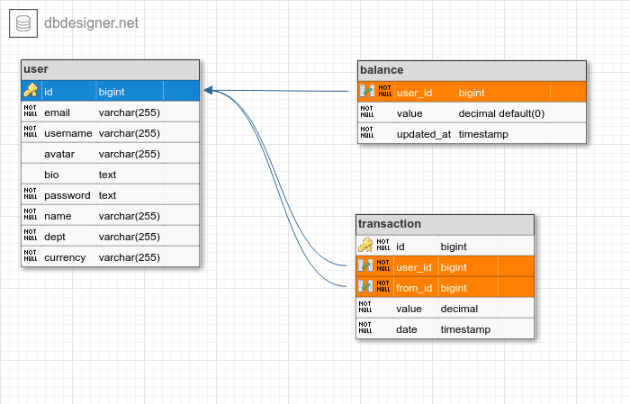

Modelagem de dados
A modelagem dos dados será a seguinte (considerando que já concluimos a tabela de User), fica faltando implementar as outras 2 tabelas.

https://dbdesigner.page.link/GqDU95ApwZs7a9RH9
Portanto criaremos os models para Transaction e Balance
EDITE dundie/models/transaction.py
from datetime import datetime
from typing import TYPE_CHECKING, Optional
from sqlmodel import Field, Relationship, SQLModel
if TYPE_CHECKING:
from dundie.models.user import User
class Transaction(SQLModel, table=True):
"""Represents the Transaction Model"""
id: Optional[int] = Field(default=None, primary_key=True)
user_id: int = Field(foreign_key="user.id", nullable=False)
from_id: int = Field(foreign_key="user.id", nullable=False)
value: int = Field(nullable=False)
date: datetime = Field(default_factory=datetime.utcnow, nullable=False)
# Populates a `.incomes` on `User`
user: Optional["User"] = Relationship(
back_populates="incomes",
sa_relationship_kwargs={"primaryjoin": 'Transaction.user_id == User.id'},
)
# Populates a `.expenses` on `User`
from_user: Optional["User"] = Relationship(
back_populates="expenses",
sa_relationship_kwargs={"primaryjoin": 'Transaction.from_id == User.id'},
)
class Balance(SQLModel, table=True):
"""Store the balance of a user account"""
user_id: int = Field(
foreign_key="user.id",
nullable=False,
primary_key=True,
unique=True,
)
value: int = Field(nullable=False)
updated_at: datetime = Field(
default_factory=datetime.utcnow,
nullable=False,
sa_column_kwargs={"onupdate": datetime.utcnow}
)
# Populates a `._balance` on `User`
user: Optional["User"] = Relationship(back_populates="_balance")
Como estamos includindo relacionamentos entre os models Transaction, Balance e User precisamos implementar as respectivas mudanças no dundie/models/user.py
incomesirá retornar uma query com todos os pontos que o usuário ganhouexpensesirá retornar uma query com todos os pontos que o usuário gastou- E
balanceirá retornar o saldo atual do usuário, para balance estamos usando um relacionamento one-to-one, por isso precisamos usar olazy="dynamic"e uma property do Python para garantir que caso o saldo seja inexistente sempre tenhamos um valor de retorno padrão.
from typing import TYPE_CHECKING, Optional
class User(...):
...
# Populates a `.user` on `Transaction`
incomes: Optional[list["Transaction"]] = Relationship(
back_populates="user",
sa_relationship_kwargs={"primaryjoin": 'User.id == Transaction.user_id'},
)
# Populates a `.from_user` on `Transaction`
expenses: Optional[list["Transaction"]] = Relationship(
back_populates="from_user",
sa_relationship_kwargs={"primaryjoin": 'User.id == Transaction.from_id'},
)
# Populates a `.user` on `Balance`
_balance: Optional["Balance"] = Relationship(
back_populates="user",
sa_relationship_kwargs={"lazy": "dynamic"}
)
@property
def balance(self) -> int:
"""Returns the current balance of the user"""
if (user_balance := self._balance.first()) is not None: # pyright: ignore
return user_balance.value
return 0
E por fim adicionamos o novo model ao contexto do dundie/models/__init__.py
from sqlmodel import SQLModel
from .user import User
from .transaction import Transaction, Balance
__all__ = ["User", "SQLModel", "Transaction", "Balance"]
Criando as migrations
Com os models criados pediamos ao alembic para criar o arquivo de migration com as mudanças que precisam ser aplicadas ao Postgresql.
$ docker compose exec api alembic revision --autogenerate -m "transaction"
INFO [alembic.runtime.migration] Context impl PostgresqlImpl.
INFO [alembic.runtime.migration] Will assume transactional DDL.
INFO [alembic.autogenerate.compare] Detected added table 'balance'
INFO [alembic.autogenerate.compare] Detected added table 'transaction'
INFO [alembic.ddl.postgresql] Detected sequence named 'user_id_seq' as owned by integer column 'user(id)', assuming SERIAL and omitting
Generating /home/app/api/migrations/versions/8af1cd3be673_transaction.py ... done
E em sequencia aplicamos para criar as tabelas no banco de dados:
$ docker compose exec api alembic upgrade head
INFO [alembic.runtime.migration] Context impl PostgresqlImpl.
INFO [alembic.runtime.migration] Will assume transactional DDL.
INFO [alembic.runtime.migration] Running upgrade f39cbdb1efa7 -> b0abf3428204, transaction
Neste momento nossas tabelas transaction e balance já devem estar criadas.
Antares SQL

Agora vamos criar a lógica de negócios que cuidará da adição de novas transações -->